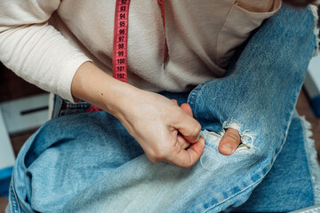

Serviços

Consertos
Damos uma nova vida ás suas roupas favoritas com nossos serviços de conserto. Ajustamos baínas, zíperes e reparamos rasgos, garantindo que suas peças voltem a ser como novas.

Restauração
Restauramos peças antigas ou danificadas, cuidando de tecidos e bordados para recuperar a beleza original das suas roupas.

Confecção
Criamos roupas exclusivas e sob medida, refletindo seu estilo pessoal. Desde a escolha dos tecidos até o design final, transformamos sua visão em realidade com dedicação e habilidade.